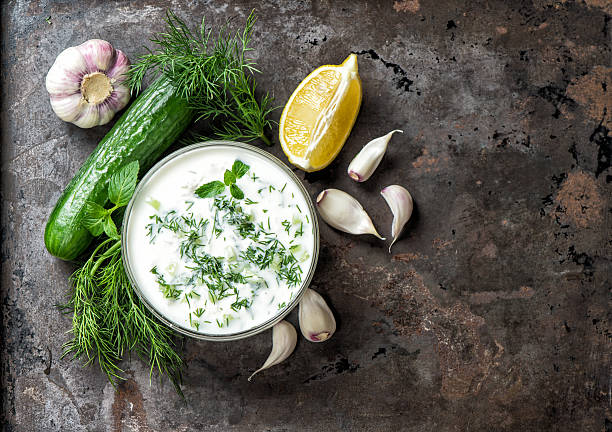

Back to Home
Tzatziki Dip

Description
A refreshing Greek dip made with yogurt, cucumber, and herbs.
Ingredients
- 1 lb Cucumber, seeded, grated, juices pressed out
- 1 quart Greek yogurt
- 0.5 wtoz Herb, Dill, fine chopped
- 0.25 wtoz Herb, Mint, fine chopped
- 4 tbsp lemon juice
- 2 tbsp garlic, minced
- 1 tbsp honey
- 1.5 tsp kosher salt
Instructions
- Cut cucumber in half lengthwise and scoop out the seeds. Grate the cucumbers either with a robo coupe grater attachment or an actual grater. Line strainer with cheesecloth or a coffee filter and place grated cucumber to strain for approximately 20 minutes.
- Press out excess liquid from cucumber prior to weighing.
- Place remaining ingredients in a bowl and mix well.
- Garnish with olive oil, crushed red pepper flakes, and dill clusters.